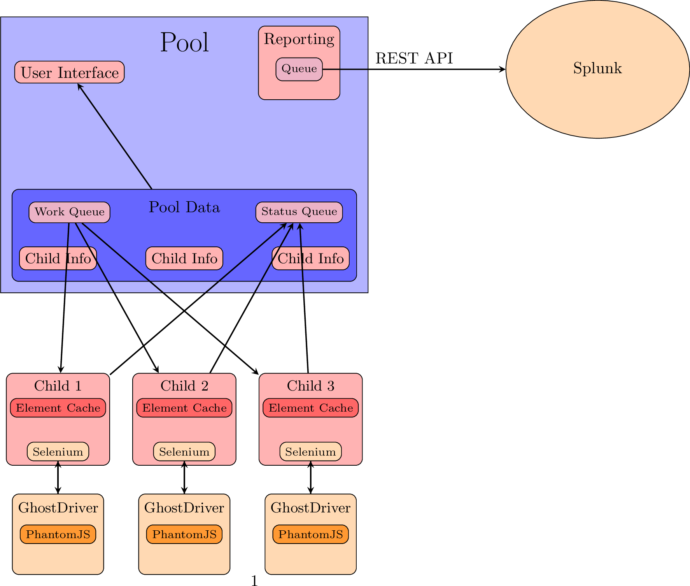

Selenium Wrapper is a project designed to make WebDriver-based Selenium more feasible for load testing. Using PhantomJS and GhostDriver, it can spawn off as many child processes running provided test suites as your processor can handle. These test suites are optimized for sites becoming slow and not responding, and wait for elements to appear with minimal CPU usage. Unlike stock Selenium, this wrapper also offers logging capabilities, automatic screenshots, and launching arbitrary numbers of tests running simultaneously from one window.
Selenium Wrapper is composed of two major tools. The first tool used and seen is the converter. The converter is used to take a Selenium IDE-exported Python WebDriver script and convert it for usage with the wrapper, the second tool.
The wrapper is a framework making load testing possible with Selenium and is mostly transparent. The converter creates a folder which contains the wrapped script and can be transported between computers to be ran without extra installs. The wrapper, when running, is structured like so:
{kind=link}